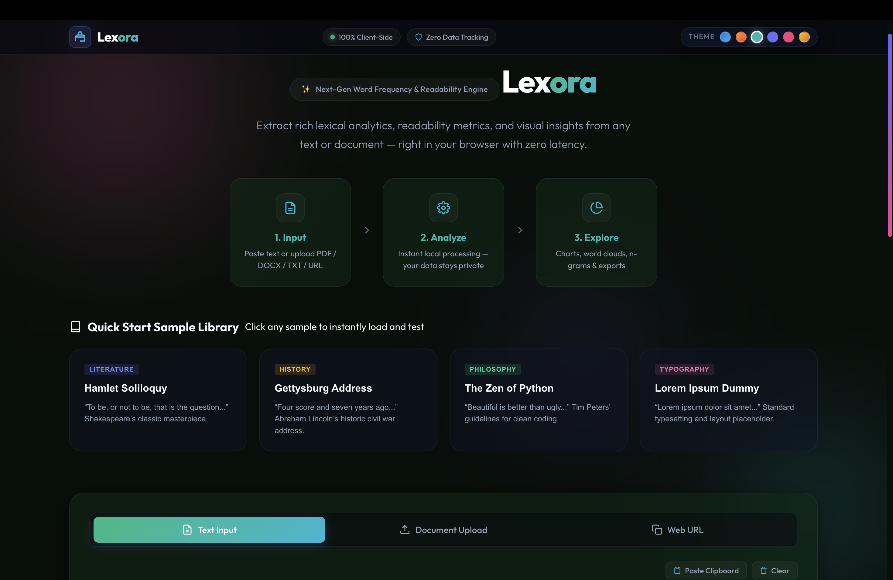
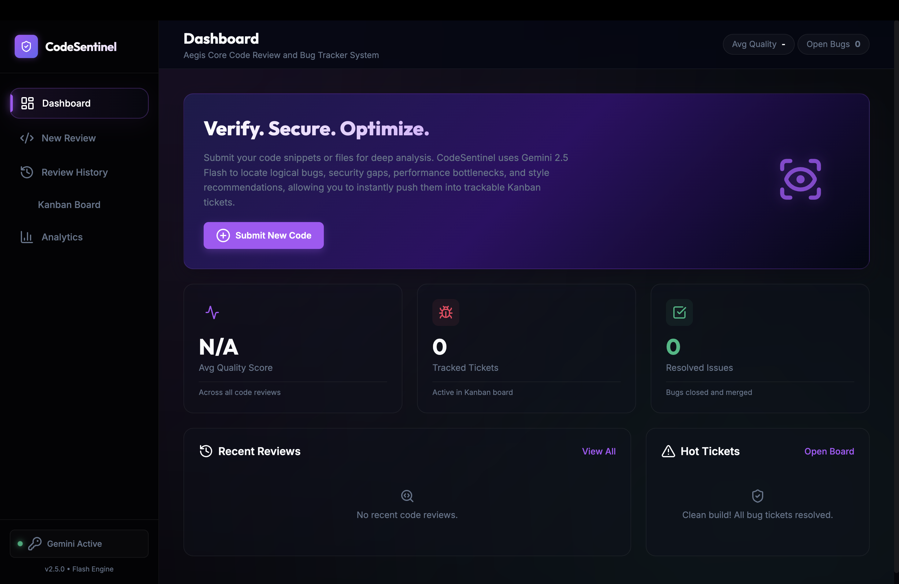
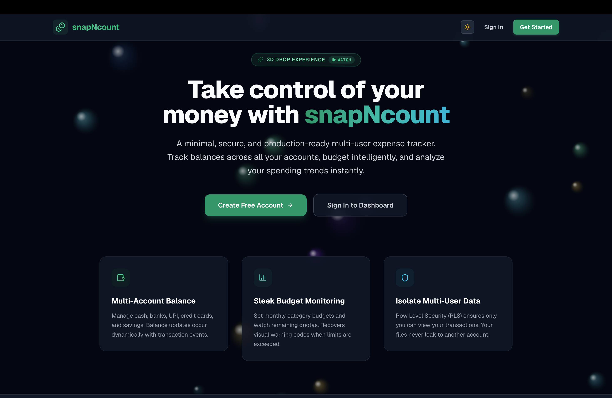
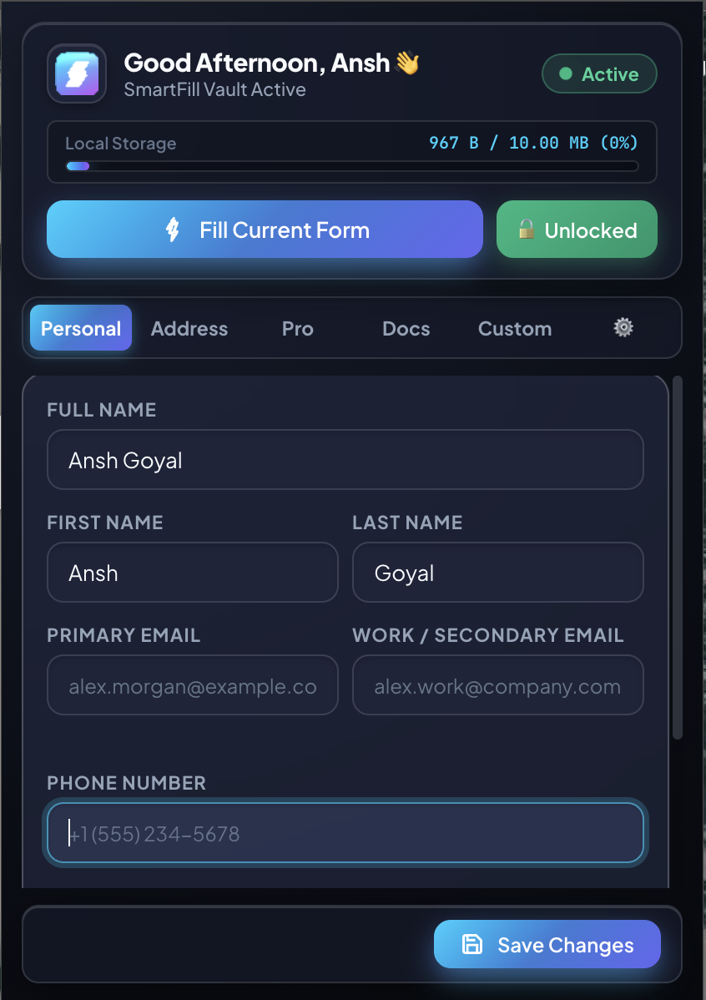

A first-year student exploring design, code, and everything in between.
Contact MeHi, I’m Ansh Goyal, a passionate technology enthusiast currently pursuing Computer Science and Artificial Intelligence at BITS Pilani, along with my studies at Scaler School of Technology. I enjoy exploring software development, artificial intelligence, and robotics, and I’m always curious about how things work. I believe in learning by building, solving real-world problems, and improving my skills through hands-on experience. My goal is to develop innovative solutions that combine technology, creativity, and practical problem-solving.
Contact Me
An interactive web application providing real-time text insights, readability scores, and vocabulary metrics. Users can upload documents (PDF, DOCX, TXT) or paste URLs to explore dynamic word clouds, frequency charts, and n-grams. Features client-side execution for complete data privacy and fast analysis.
View Project
CodeSentinel is an AI-powered code review and bug-tracking platform designed to analyze code for logical errors, security risks, performance issues, and style problems. Using Gemini 2.5 Flash and static analysis, it provides detailed code insights, complexity evaluation, and annotated reviews. Identified issues can be converted into actionable Kanban tickets, helping developers efficiently track, manage, and resolve bugs throughout the development process.
View Project
snapNcount is a clean and user-friendly expense tracking platform designed to help users manage their finances efficiently. It allows users to securely record and organize expenses, monitor spending patterns, and maintain better control over their budgets. With a simple dashboard and structured financial data, snapNcount makes tracking daily expenses easier, faster, and more convenient across devices.
View Project
SmartFill AI — a high-performance Manifest V3 Chrome extension designed to streamline web autofill. Featuring intelligent fuzzy field mapping, zero-latency SPA state synchronization (React/Vue), local client-side file compression, and PBKDF2 PIN encryption, it delivers a secure, automated form-filling experience wrapped in a modern 3D glassmorphic UI.
View Project